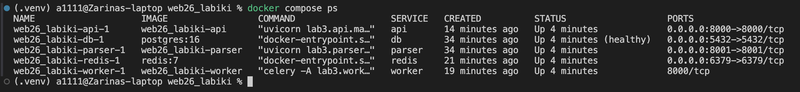
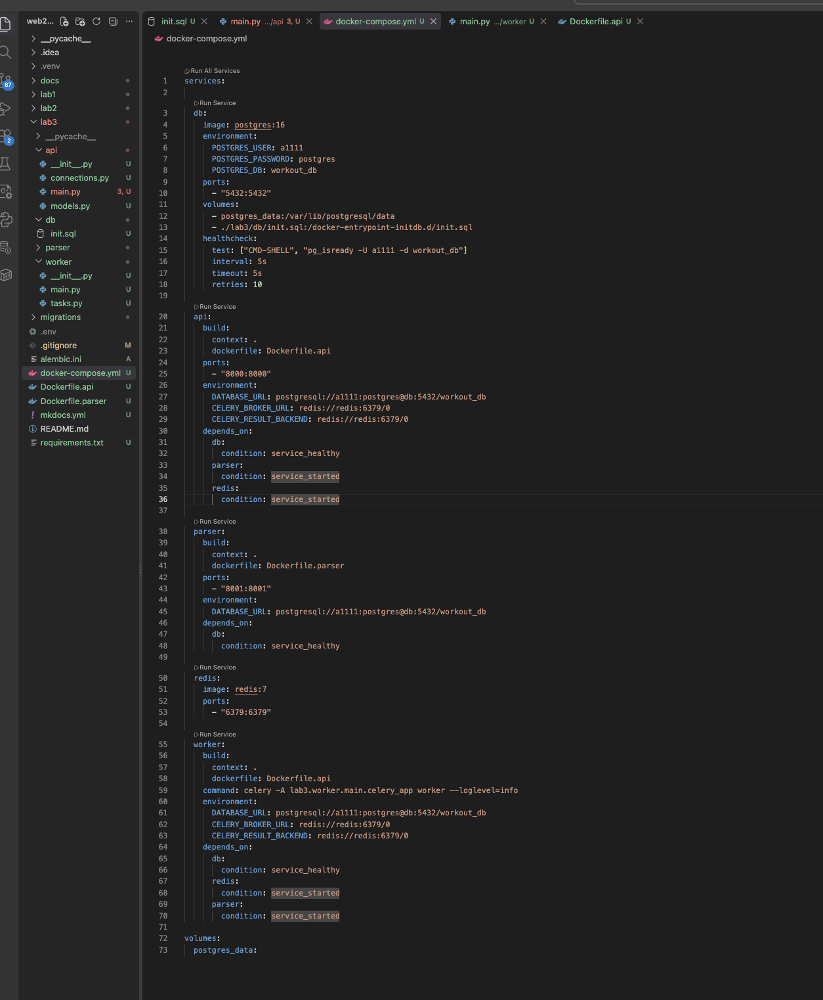
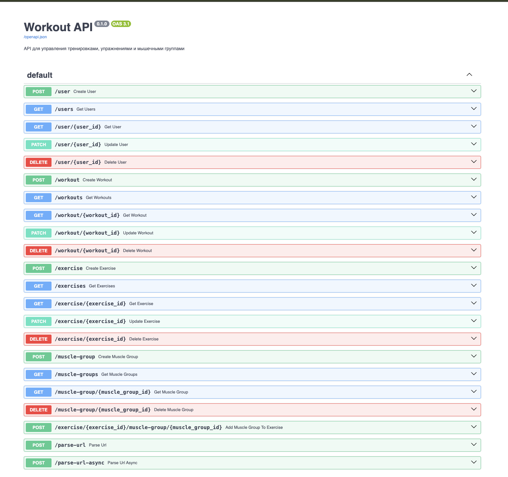
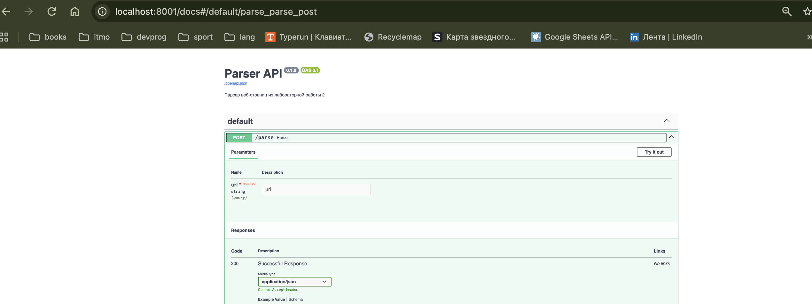
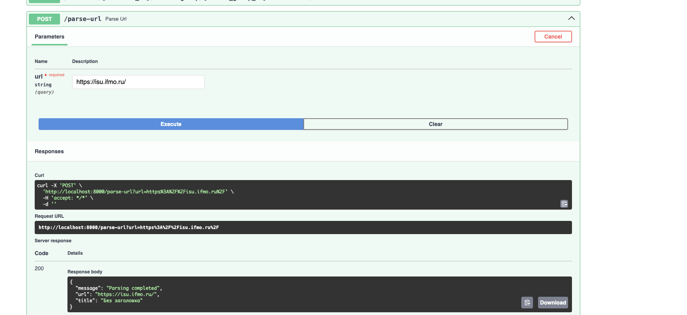
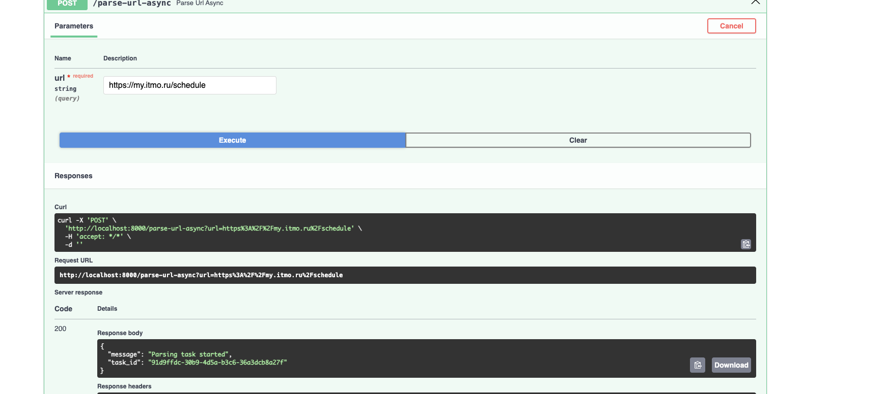
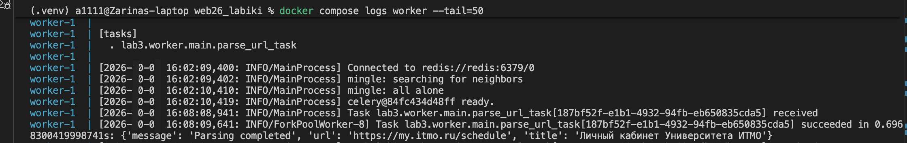

Лабораторная работа 3
Упаковка FastAPI приложения в Docker, работа с источниками данных и очереди
Цель работы
Цель лабораторной работы — научиться упаковывать FastAPI-приложение и связанные с ним сервисы в Docker-контейнеры, организовывать взаимодействие между контейнерами, использовать отдельный сервис для парсинга веб-страниц, а также выполнять обработку задач с помощью очереди Celery и Redis.
В работе используются результаты предыдущих лабораторных работ: FastAPI-приложение и база данных из лабораторной работы 1, а также парсер веб-страниц из лабораторной работы 2.
1. Упаковка приложения в Docker
На первом этапе существующее FastAPI-приложение и парсер были подготовлены для запуска в Docker-контейнерах. Для основного приложения и парсера созданы отдельные Dockerfile, а взаимодействие всех компонентов организовано с помощью Docker Compose.
В проекте используются следующие сервисы:
api— основное FastAPI-приложение;db— база данных PostgreSQL;parser— отдельный сервис для парсинга веб-страниц;redis— брокер сообщений для очереди;worker— Celery Worker, выполняющий фоновые задачи.
Для сервисов настроены переменные окружения, зависимости между контейнерами, проброс портов и подключение базы данных через Docker volume.
После запуска Docker Compose все необходимые сервисы успешно запустились. Состояние контейнеров представлено на рисунке 1.

Рисунок 1 — Состояние контейнеров Docker Compose
На скриншоте видно, что все пять сервисов находятся в рабочем состоянии. Контейнер базы данных PostgreSQL дополнительно имеет статус healthy.
Конфигурация взаимодействия сервисов представлена в файле docker-compose.yml (рисунок 2).

Рисунок 2 — Конфигурация Docker Compose для запуска сервисов лабораторной работы
В конфигурации описаны PostgreSQL, FastAPI, parser, Redis и Celery Worker, а также их зависимости и параметры подключения.
После запуска контейнера основное FastAPI-приложение доступно через Swagger-документацию. Результат представлен на рисунке 3.

Рисунок 3 — Swagger-документация основного FastAPI-приложения
Swagger содержит endpoint'ы из предыдущей лабораторной работы, а также новые endpoint'ы /parse-url и /parse-url-async, предназначенные для работы с парсером и очередью задач.
Отдельный сервис парсера также запущен в Docker и имеет собственную Swagger-документацию (рисунок 4).

Рисунок 4 — Swagger-документация отдельного сервиса парсера
Сервис предоставляет endpoint POST /parse, который принимает URL веб-страницы и выполняет её обработку.
2. Вызов парсера через FastAPI
На втором этапе реализован endpoint /parse-url, который принимает URL от клиента и передаёт его отдельному сервису парсера.
Основное FastAPI-приложение отправляет HTTP-запрос в контейнер parser по адресу:
http://parser:8001/parse
После обработки страницы parser возвращает результат основному API, которое передаёт его клиенту.
Для проверки работы endpoint был выполнен запрос с URL веб-страницы.

Рисунок 5 — Вызов сервиса парсинга через основной FastAPI API
В результате был получен HTTP-код 200 и ответ:
{
"message": "Parsing completed",
"url": "https://isu.ifmo.ru/",
"title": "Без заголовка"
}
Полученный ответ подтверждает, что основной API успешно передал URL отдельному parser-сервису и получил от него результат обработки.
3. Использование очереди Celery и Redis
На третьем этапе была добавлена асинхронная обработка задач с использованием Celery и Redis.
Для этого в проект добавлены:
- Redis как брокер сообщений;
- Celery Worker для выполнения фоновых задач;
- задача
parse_url_task; - endpoint
/parse-url-asyncдля постановки задачи в очередь.
Схема обработки запроса имеет следующий вид:
Клиент
↓
FastAPI
↓
Redis
↓
Celery Worker
↓
Parser
↓
PostgreSQL
Для проверки асинхронной обработки через Swagger был выполнен запрос:
POST /parse-url-async
с URL:
https://my.itmo.ru/schedule
В ответ API вернул идентификатор созданной задачи.

Рисунок 6 — Постановка задачи парсинга в очередь Celery
В результате был получен HTTP-код 200 и идентификатор задачи:
{
"message": "Parsing task started",
"task_id": "91d9ffdc-30b9-4d5a-b3c6-36a3dcb8a27f"
}
Полученный task_id подтверждает, что запрос был принят API и задача была создана для последующей фоновой обработки.
После постановки задачи она была получена Celery Worker и успешно выполнена.

Рисунок 7 — Выполнение задачи парсинга Celery Worker
В логах Worker отображаются события получения и успешного выполнения задачи parse_url_task. Это подтверждает, что задача была передана Worker через очередь и обработана.
Результат обработки сохраняется в базе данных PostgreSQL в таблице parsed_pages.

Рисунок 8 — Результаты парсинга, сохранённые в PostgreSQL
В таблице отображаются URL обработанной страницы и полученный заголовок. Наличие записей подтверждает, что результат выполнения парсера был сохранён в PostgreSQL.
Вывод
В ходе лабораторной работы существующее FastAPI-приложение было упаковано в Docker и объединено с базой данных PostgreSQL, отдельным сервисом парсинга, Redis и Celery Worker.
Было реализовано взаимодействие основного API с parser-сервисом через HTTP-запрос. Кроме того, добавлена асинхронная обработка URL с использованием Redis и Celery: API создаёт задачу, Worker получает и выполняет её, после чего результат сохраняется в PostgreSQL.
В результате была получена распределённая структура приложения из нескольких взаимодействующих контейнеров, а также освоены основные принципы контейнеризации FastAPI-приложения, взаимодействия сервисов и организации фоновых задач с помощью очереди.